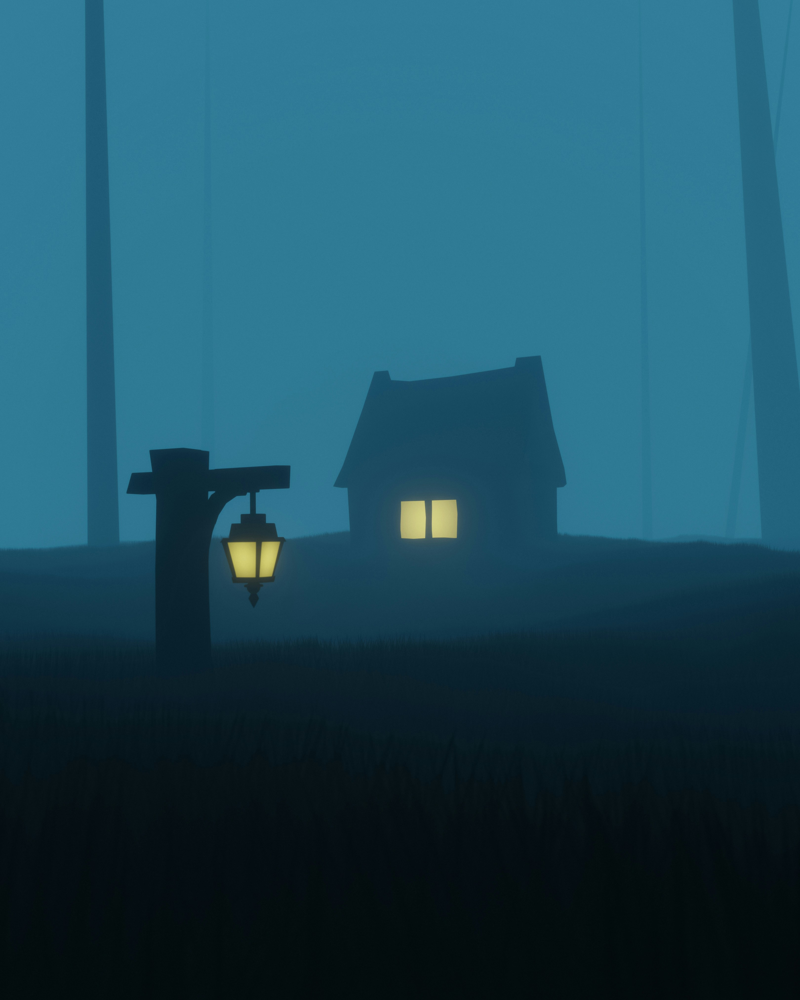

Compared to original, it's way differently, obviously. But my reasoning for making more brighter, is quite simple, the picture is quite dark. My three colors we're blue, brown, and yellow. Brown and yellow, are quite similar, and so choosing the colors for both was a little difficult. But I go it through and made a similar and calm environment. I put house further and made it into a cabin. When it came shaping and figuring the shapes, heh, I sort of exaggerated the house the most and same as the lamplight. I changed the sizes, I made the lamplight smaller. And cabin was just extended, more color, and cabin like.